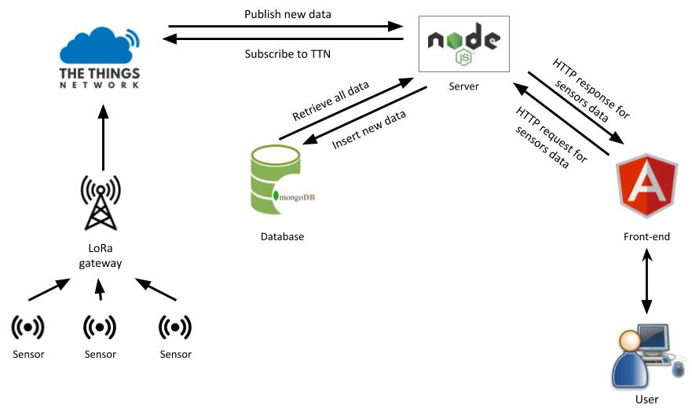

Introduction
I was confronted with many problems through the projects. I will present in this part all situations where I was confronted to these problems and how I solve them.
Innovative Project
Presentation
“Social Network for Pollution” was the biggest project we had to made during this training which lasted four months. In collaboration with the University of Wollongong, our objective was to develop a platform to measure air quality from the design of the air quality sensor to the display of air quality data in a user-friendly interface.
We split the work into two groups: one group on the design of the sensor and one group on the user interface and the data acquisition. As the University of Wollongong has already designed the package of the sensor and chosen the microcontroller, we used a LoPy microcontroller able to send data yo LoRa network thanks to an embedded LoRa module. The air quality sensor is in fact a device embedded several sensors: particle sensors, gas sensors, humidity sensor and temperature sensor. Because we want low cost solution with low power consumption, we tried to choose low cost components able to measure gases that we found relevant to determine the level of the air quality, and we use LoRa technology which is suitable for IoT applications thanks to low power consumption and long range. We also choose TheThingsNetwork (TTN) platform, a collaborative and open network using LoRa technology, to manage our data sensors.
My work was essentially focused on the data communication from the cloud to our application and the storage process in order to provide these data to the user interface when a user access to our website.
Resolution of problem
During this project, I was confronted to three main problems: the data communication, the storage process and the data acquisition between a database and the user interface.
Firstly, in group, we had to define clearly the global architecture of our application to understand the all the process and determine entities involving in the system.
Secondly, we choose Node.js as a server to communicate with TTN in order to retrieve data from sensors. Several libraries are available with Node.js to communicate with TTN or a database, and Node.js is a event-based Javascript runtime, which allows to execute multiple tasks “at the same time”, so it can handle user requests and communicate with TTN in parallel.
Thirdly, the storage process is made with MongoDB, a NoSQL database which is very flexible because of its non-structured system. In this way, it is possible to store data with different fields and if a new sensor enter the network with other type of data, it is easy to store them into the database.
Finally, when a user wants to access data, the Node.js server have to provide a Rest API in order to allow a client application to ask him data. The Node.js server provide only a GET method in order to retrieve all data stored in the MongoDB database.
The knowledge and skill mobilized
The knowledge and skills I mobilize during this project was about web programming in Javascript for Node.js server, database creation and queries with MongoDB, the communication with TTN through MQTT protocol and the implementation of a Rest API in Javascript on the Node.js server. Also, I was able to define the architecture of our application.
Smart Device
Presentation
The purpose of this project is to conceive the schematic impedance adaptation circuit in order to connect a gas sensor to the Arduino Uno. Me and my partner were from the computer science department, so it was the first time we designed an electronic circuit using KiCad.
Resolution of problem
The first problem was to get familiar with the software and to understand electronic concepts. To solve this problem, we learn with teacher slides and by searching on the internet how to use the software KiCad and what are the concepts behind schematics and layout we had to design.
The second problem was to design components that the software do not implement. There are two: LTC1050 which is an amplifier the RN_Breakout2483 module corresponding to a LoRa module. To handle this problem, with follow example given by the teacher and we consult datasheets of these components to understand and design their symbol being aware with their pins characteristics.
The knowledge and skill mobilized
In this project, I learn how to use KiCad to design schematics and layout for PCB and how to create components that the library does not propose by reading the datasheet.
Big Data
Service Oriented Architecture
Introduction
During this journey, we study on several fields related to the IoT domain. From electronical design of electronic components to data communication, but also about human concepts in team management and social psychology, we follow formation in order to understand, to design and to implement innovative products.
Smart Device
Sensor introduction
In an IoT application, sensors are the base of the system. Different types of sensors exist to measure several phenomena. In the context of our formation, the goal of this course is to help for choosing a sensor, designing a measurement chain and to develop a "smart device". As we will certainly embed a sensor into an IoT system, it is important to take into account all these concepts to make the good choices.
What we want for a sensor is the fiability and the accuracy. A sensor measure a specific (or several) phenomena and delivers a voltage depending on the value of the measurant.
Communication
Middleware and Service
Analysis and Data Processing, Business Application
Innovation and Humanity
Introduction
In this part, you will find all the document related to the projects made during this training.